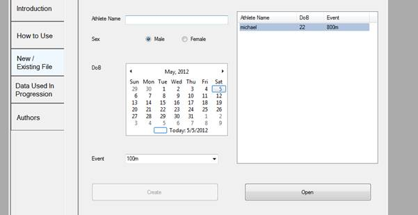

Help
How do I Save?
Can I change the name of an athlete after creating a document?
How do I select an age in the Calendar?
My event isn’t in the drop down list. What should I do?
What is this program for?
How do I delete an Athlete?
Where are the documents that are created from this program?
Why can’t I choose where to save these files?
What am I suppose to do without the files?
How do I print?
What do all the lines on the graph mean?
I can’t see the whole graph, How to I navigate around?
HowToUse
How do I Save?
When you are working in a document, up the top in the Menu Bar click Save or press Ctrl + S to save the document. Also by closing the form if you have done work but haven’t saved the program will prompt you to save if you wish.
Can I change the name of an athlete after creating a document?
Not at this stage. You would be best to start a new document and copy the data over manually if you want a new name.
How do I select an age in the Calendar?
Clicking on the date located at the top-middle of the calendar you can expand your search to find what day / month / year you are after.
My event isn’t in the drop down list. What should I do?
Currently the events that appear in the drop down list are the only ones that data has been collected for. Unfortunately there is nothing that can be done. Your event may appear in later versions of the program.
What is this program for?
Information on the program is located in the Contents form under the Introduction tab. Other information such as about the Authors, Data Used and How to use can also be located here or under the Help Option in the Menu Bar.
How do I delete an Athlete?
In the menu bar under File there is an option to delete athletes.
Where are the documents that are created from this program?
Why can’t I choose where to save these files?
The files are stored within the program to help users keep all the documents in one place. Later on there will be ways to export data to other computers if desired.
What am I suppose to do without the files?
Currently you can print the graph that has been created. A way to export the graphs will be created in a later release.
How do I print?
If you have a document open, under the Excel option in the menu bar there is an option to print the graph.
What do all the lines on the graph mean?
A key / Legend is provided under the Excel option in the Menu Bar. If you want to know more about the graphs, look into Introduction and About in the Contents menu or under the Help option in the Menu Bar.
I can’t see the whole graph, How to I navigate around?
There will be an update later on to navigate the graph easily without the need for scroll bars.
How to use this programme
- Select and open the Tab “ New/ Existing File”
- Enter your name. This will appear on the graph.
- Enter your gender (sex)
- Enter your date of birth by choosing from the calendar
- Enter the event you want to plot
- Then select “Create New”. The graph for the event will appear.
- On the table at the right side of the screen, in the left column
enter the date of the competition (in the format mm-dd-yyyy)
- In the right column enter the actual performance (in the format
or m:ss.ss or mm:ss.ss for running events or mm.cc for field events.
- Keep entering as many performances (see note 7) as you can
and the performance trend line and data points will be updated
each time you enter a new performance.
- It is important to enter as many performances as you can to get a
more accurate description of your performance trend line. You
should NOT be selective in which performances you add. Remember the actual performance trend lines for the other athletes on the chart were constructed using all available performances – not just their good ones. You are cheating yourself if you exclude your “bad” performances. The only performances you can consider excluding would be say a heat in a competition where the next round is the same day or a heat where you easily qualified and did not run to 100%. (New Zealand athletes can gain all of their performances from their profile on the Athletics New Zealand Rankings Lists page) Wind assisted performances can be included as we have allowed for this in the performance trend lines. Only use performances achieved with senior throws implements and performances achieved with senior hurdle heights.
- Clicking on the chart and moving the cursor over any performance trend line will reveal the name of the athlete whose performance trend line it is. The red performance trend lines are for athletes who have medalled at an Olympic Games or World Championships 2000 – 2010; the blue performances trend lines are for athletes who finished 4th – 8th at a OG or WC; and the mauve performance trend lines are for athletes who finished 9th – 16th (track events) or 9th – 12th (field events) at a OG or WC. (See Legend)

- Save your performance trend line by clicking on the Save icon or
simply exit the programme.
- If you want to add more performances at a later stage open the tab “ New/ Existing File” and select your file from those listed on the right hand column.

How to interpret your trend line
- Your trend line appears as a black line. The red performance trend lines are for athletes who have medalled at an Olympic Games or World Championships 2000 – 2010; the blue performances trend lines are for athletes who finished 4th – 8th at a OG or WC; and the mauve performance trend lines are for athletes who finished 9th – 16th (track events) or 9th – 12th (field events) at a OG or WC. (See Legend). The performance trend lines have been constructed by using as many performance data points as possible – not just the best performance in any one year – which is misleading. An example of the performance plot and individual performances of a male World Championships gold medallist in the 200m is shown below. You can see how you are progressing compared to other international class athletes. You will have noticed that every athlete has a unique
performance trend line – some start slowly and improve rapidly, whilst others start at a higher level and improve at a slightly lesser rate – however they all succeeded at the international level!
- You can gauge how your rate of improvement is going simply by adding further performances as they are achieved.
- If your performance trend line is tracking down, then you really need to discuss this with your coach.
- If your performance trend line is in the zone of other successful athletes, then you can start to make some decisions about your future international programme.